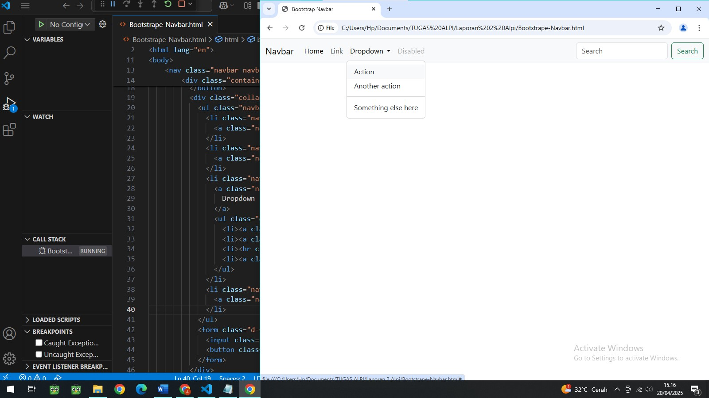
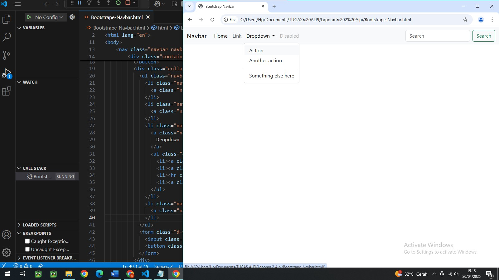

CSS digunakan untuk mengatur tampilan visual dan gaya elemen halaman web. Seperti mengubah Warna, Font, Tata Letak, Responsivitas (tampilan desktop, tablet, ponsel).
JavaScript digunakan untuk menambahkan interaktivitas dan fungsionalitas halaman web. Seperti mengatur Animasi dan Efek Visual, Reaksi Elemen saat di Klik, meningkatkan UX web, dan menampilkan atau memvalidasi form ketika diisi, dan mengelola fitur web yang canggih.
 
